<footer class="footer">
    <div class="footer-top">
        <div class="footer-brand-col">
            <!-- Logo putih untuk footer -->
            
            <p>Kopi yang baik, makanan yang lezat, dan suasana yang selalu menyenangkan.</p>
        </div>
        
        <div class="footer-links-col">
            <h4>Tautan Cepat</h4>
            <ul>
                <li><a href="/index.html">Beranda</a></li>
                <li><a href="/pages/menu.html">Menu</a></li>
                <li><a href="/pages/pesanan-saya.html">Pesanan Saya</a></li>
                <li><a href="/pages/kontak.html">Kontak</a></li>
            </ul>
        </div>
        
        <div class="footer-contact-col">
            <h4>Kontak Kami</h4>
            <ul class="contact-list">
                <li><i class="ph ph-map-pin"></i> Jl. Melati No. 12, Jakarta</li>
                <li><i class="ph ph-envelope-simple"></i> hello@nakocing.id</li>
                <li><i class="ph ph-instagram-logo"></i> @nakocing.cafe</li>
            </ul>
        </div>
        
        <div class="footer-social-col">
            <h4>Ikuti Kami</h4>
            <div class="social-icons">
                <a href="#"><i class="ph ph-instagram-logo"></i></a>
                <a href="#"><i class="ph ph-tiktok-logo"></i></a>
                <a href="#"><i class="ph ph-youtube-logo"></i></a>
            </div>
        </div>
    </div>
    
    <div class="footer-bottom">
        <p>&copy; 2026 NakoCing. All rights reserved.</p>
        <p class="footer-quote"><i class="ph-fill ph-paw-print"></i> Good food, good mood, no rush.</p>
    </div>
</footer>